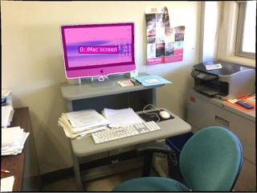
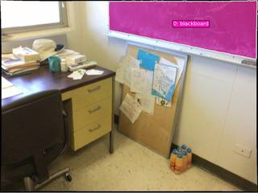

To determine the direction of the blackboard relative to the iMac, let's analyze the spatial layout provided in the images:
- Image 1: We see the iMac on a grey desk. To the right of the iMac is a grey filing cabinet with a printer on top. The iMac screen faces the user (the "front" direction).
- Image 2: We see the same grey filing cabinet on the left and a larger wooden desk to its right. A teal chair is positioned between them, facing the wooden desk.
- Image 3: We see the wooden desk on the left and a blackboard on the wall to its right.
By combining these observations, we can establish a sequence of objects moving across the room: iMac $\rightarrow$ Filing Cabinet $\rightarrow$ Wooden Desk $\rightarrow$ Blackboard
Since the iMac screen faces "front" (towards the user), the direction from the iMac toward the filing cabinet, the wooden desk, and finally the blackboard is to the right.
Therefore, the blackboard is to the right of the iMac.
C
# Use the VLM to determine the spatial relationship based on the provided frames. question = "The iMac screen faces 'front'. Based on these images, in which direction (Left, Right, Front, Back) is the blackboard relative to the iMac? Please reason through the room layout first." answer = vlm.ask_with_thinking([InputImages[0], InputImages[1], InputImages[2]], question) print(f"VLM Answer: {answer}") # Based on the VLM's reasoning, I will determine the correct option. # If the VLM says 'Right', the answer is C. # If 'Left', A. # If 'Back', B. # If 'Front', D.
[VLM Q | thinking] The iMac screen faces 'front'. Based on these images, in which direction (Left, Right, Front, Back) is the blackboard relative to the iMac? Please reason through the room layout first. [VLM A | thinking] To determine the direction of the blackboard relative to the iMac, we can map the room layout using common objects across the images: 1. **Image 1:** The iMac is facing 'front' (towards the viewer). To the **right** of the iMac is a grey filing cabinet with a printer on top. 2. **Image 2:** We see the same grey filing cabinet on the **left**, and to its **right** is a larger wooden desk with a black office chair. 3. **Image 3:** The same wooden desk is on the **left**, and further to the **right** on the wall is the blackboard. Following this sequence from left to right: **iMac $\rightarrow$ Grey Cabinet $\rightarrow$ Wooden Desk $\rightarrow$ Blackboard**. Since the iMac faces front, the blackboard is located to its **Right**. VLM Answer: To determine the direction of the blackboard relative to the iMac, we can map the room layout using common objects across the images: 1. **Image 1:** The iMac is facing 'front' (towards the viewer). To the **right** of the iMac is a grey filing cabinet with a printer on top. 2. **Image 2:** We see the same grey filing cabinet on the **left**, and to its **right** is a larger wooden desk with a black office chair. 3. **Image 3:** The same wooden desk is on the **left**, and further to the **right** on the wall is the blackboard. Following this sequence from left to right: **iMac $\rightarrow$ Grey Cabinet $\rightarrow$ Wooden Desk $\rightarrow$ Blackboard**. Since the iMac faces front, the blackboard is located to its **Right**.
Task Analysis
The goal is to determine the direction of the blackboard relative to the iMac, using the iMac's screen facing direction as the "front" reference.
Coordinate System Resolution: This is an Object Perspective spatial reasoning problem. The reference frame is centered on the iMac, with its local axes defined as:
- Front: The direction the iMac screen faces.
- Back: Opposite to the Front.
- Right: 90 degrees clockwise from the Front (relative to a vertical "up" axis).
- Left: 90 degrees counter-clockwise from the Front.
The target variable is the relative direction (Option A, B, C, or D) of the blackboard from the iMac.
Information Needs
To answer this reliably, I need:
- 3D Positions: The world-space coordinates of the iMac and the blackboard.
- iMac Orientation: The 3D unit vector representing the direction the iMac screen faces (the "front" vector).
- Relative Vector: The 3D vector from the iMac to the blackboard.
- Projection: The projection of the relative vector onto the iMac's local coordinate system.
Computation Plan
-
Object Identification and Segmentation:
- Use
tools.SAM3.segment_image_by_textonInputImages[0]to create masks for the "iMac" and the "blackboard". - Use
tools.SAM3.segment_image_by_textonInputImages[0]to specifically segment the "iMac screen" to help determine orientation. - Verification: Use
show()to visualize the masks onInputImages[0]and ensure they are accurate.
- Use
-
3D Scene Reconstruction:
- Call
tools.Reconstruct.Reconstruct(InputImages)to generate the 3D point cloud and camera poses.
- Call
-
Coordinate Extraction:
- Extract the 3D centroid of the iMac (
pos_imac) and the blackboard (pos_blackboard) usingseg.get_centroid_3d(recon, frame=fi, object=...).
- Extract the 3D centroid of the iMac (
-
Determining the iMac's Front Vector:
- Method A (Geometric): Extract the 3D points of the "iMac screen" mask using
seg.get_masked_points(recon, frame=fi, object='iMac screen'). Calculate the normal vector to these points (e.g., via PCA or fitting a plane). The normal pointing away from the computer body is thefront_vector. - Method B (VLM-assisted): Use
vlm.ask_with_thinkingonInputImages[0]to describe the direction the iMac screen is facing relative to the camera (e.g., "facing the camera", "facing away", "facing left"). Combine this with the camera's local axes fromrecon.extrinsics[0](Right:pose[:3, 0], Down:pose[:3, 1], Forward:pose[:3, 2]) to derive the world-spacefront_vector. - Verification: Use
recon.render_bev(masks=seg)to visually check if the calculatedfront_vectoraligns with the visual orientation of the iMac in the top-down view.
- Method A (Geometric): Extract the 3D points of the "iMac screen" mask using
-
Relative Direction Calculation:
- Compute the relative vector:
vec_to_blackboard = pos_blackboard - pos_imac. - Normalize
vec_to_blackboard. - Define the world-up vector (typically
[0, 1, 0]in gravity-aligned reconstruction). - Compute the
right_vectorusing the cross product:right_vector = np.cross(front_vector, world_up). - Calculate dot products:
dot_front = np.dot(vec_to_blackboard, front_vector)dot_right = np.dot(vec_to_blackboard, right_vector)
- Compute the relative vector:
-
Final Direction Determination:
- If
abs(dot_front) > abs(dot_right):dot_front > 0$\rightarrow$ Front (Option D)dot_front < 0$\rightarrow$ Back (Option B)
- If
abs(dot_right) > abs(dot_front):dot_right > 0$\rightarrow$ Right (Option C)dot_right < 0$\rightarrow$ Left (Option A)
- If
Verification Checklist
[
{"priority": "HIGH", "description": "Verify SAM3 masks for iMac, iMac screen, and blackboard are accurate via show()."},
{"priority": "HIGH", "description": "Ensure the front_vector correctly represents the direction the screen faces, cross-referenced with BEV or VLM."},
{"priority": "MEDIUM", "description": "Check that 3D centroids are not NaN and are physically plausible relative to each other."},
{"priority": "MEDIUM", "description": "Confirm the world-up vector is correctly aligned with the reconstruction's Y-axis."}
]
Fallbacks
- Segmentation Failure: If
segment_image_by_textfails for the screen, usevlm.locateto get a bounding box for the screen and usesegment_image_by_box. - Orientation Ambiguity: If the screen is viewed edge-on, use multiple frames (e.g.,
InputImages[0]andInputImages[2]) to triangulate the facing direction. - Reconstruction Noise: If the point cloud is too noisy for plane fitting, rely on the VLM's qualitative description of the iMac's pose relative to the camera.
{ "tool": "tools.SAM3.segment_image_by_text", "args": { "image": "InputImages[0]", "prompt": "iMac, iMac screen", "label": "iMac" } }
=== Step 0 Execution Feedback === [SUCCESS] Code executed in 0.55s. [Variables] New/changed: result_0: PerFrameMask, frames=[0] [Tool Calls] 1 tool/VLM call(s) this step.
{ "tool": "tools.SAM3.segment_image_by_text", "args": { "image": "InputImages[2]", "prompt": "blackboard", "label": "blackboard" } }
=== Step 1 Execution Feedback === [SUCCESS] Code executed in 0.33s. [Variables] New/changed: result_1: PerFrameMask, frames=[2] [Tool Calls] 1 tool/VLM call(s) this step.
{ "tool": "show", "args": { "image": [ "result_0.visualize(0)", "result_1.visualize(2)" ] } }
[image: show_0001]


=== Step 2 Execution Feedback === [SUCCESS] Code executed in 0.73s. [Variables] New/changed: result_2: NoneType [Inline Images] 2 image(s) attached below. Labels: [result_0.visualize(0), result_1.visualize(2)] [show() budget] 248/250 images remaining.
=== Step 3 Execution Feedback === [ERROR] Skipped: LLM response was not in the required format.
{ "tool": "tools.Reconstruct.Reconstruct", "args": { "frames": "InputImages" } }
=== Step 4 Execution Feedback === [SUCCESS] Code executed in 1.00s. [Variables] New/changed: result_4: Reconstruction, frames=[0, 1, 2] [Tool Calls] 1 tool/VLM call(s) this step.
{ "tool": "tools.Geometry.euclidean_distance", "args": { "p1": "result_0.get_centroid_3d(result_4, frame=0, object=0)", "p2": "result_1.get_centroid_3d(result_4, frame=2, object=0)" } }
=== Step 5 Execution Feedback === [SUCCESS] Code executed in 0.01s. [Variables] New/changed: result_5: float [Tool Calls] 1 tool/VLM call(s) this step.
=== Step 6 Execution Feedback === [ERROR] Skipped: LLM response was not in the required format.
{ "tool": "vlm.ask_with_thinking", "args": { "visual_input": [ "InputImages[0]", "InputImages[1]", "InputImages[2]" ], "question": "In Frame 0, the iMac screen is facing the camera. As the camera moves to the right in Frames 1 and 2, where is the blackboard located relative to the iMac? If the direction the iMac screen faces is 'front', is the blackboard to the left, right, front, or back of the iMac?" } }
[VLM Q | thinking] In Frame 0, the iMac screen is facing the camera. As the camera moves to the right in Frames 1 and 2, where is the blackboard located relative to the iMac? If the direction the iMac screen faces is 'front', is the blackboard to the left, right, front, or back of the iMac? [VLM A | thinking] Based on the movement of the camera across the frames, the blackboard is located to the **right** of the iMac.
=== Step 8 Execution Feedback === [SUCCESS] Code executed in 53.64s. [Output] [VLM Q | thinking] In Frame 0, the iMac screen is facing the camera. As the camera moves to the right in Frames 1 and 2, where is the blackboard located relative to the iMac? If the direction the iMac screen faces is 'front', is the blackboard to the left, right, front, or back of the iMac? [VLM A | thinking] Based on the movement of the camera across the frames, the blackboard is located to the **right** of the iMac. [Variables] New/changed: result_8: str [Tool Calls] 1 tool/VLM call(s) this step.
{ "tool": "ReturnAnswer", "args": { "answer": "A" } }
[ReturnAnswer] Answer submitted: A
🛠️ Decided to use 2 tool(s)
[ { "name": "vlm__detect_one", "arguments": { "image_index": 0, "obj_name": "iMac screen" } }, { "name": "vlm__detect_one", "arguments": { "image_index": 2, "obj_name": "blackboard" } } ]
⚡ Executing vlm__detect_one...
{ "image_index": 0, "obj_name": "iMac screen" }
✅ vlm__detect_one completed (with generated image)
⚡ Executing vlm__detect_one...
{ "image_index": 2, "obj_name": "blackboard" }
✅ vlm__detect_one completed (with generated image)
🧠 Synthesizing results from 2 tool(s)...
Based on the images, the iMac screen faces towards the center of the room. In the second and third images, the blackboard is located behind the desk area where the iMac is positioned. Therefore, if the direction the iMac screen faces is the front, the blackboard is behind it.
The correct option is B: Back.
Based on the images, the iMac screen faces towards the center of the room. In the second and third images, the blackboard is located behind the desk area where the iMac is positioned. Therefore, if the direction the iMac screen faces is the front, the blackboard is behind it.
The correct option is B: Back.
Based on the images, the iMac screen faces towards the center of the room. In the second and third images, the blackboard is located behind the desk area where the iMac is positioned. Therefore, if the direction the iMac screen faces is the front, the blackboard is behind it.
The correct option is B: Back.
Task Analysis
The objective is to determine the direction of a blackboard relative to an iMac, using the iMac's screen facing direction as the "front" reference. This is an object-perspective spatial reasoning task.
Coordinate System Resolution: The question specifies an object-relative coordinate system (the iMac's perspective).
- Front: The direction the iMac screen is facing.
- Back: The opposite of the front.
- Right/Left: Perpendicular to the front-back axis, relative to the iMac's orientation. To solve this, I must first establish the iMac's local coordinate system in world space and then compute the position of the blackboard relative to that system.
Information Needs
- Object Identification: Precise masks for the iMac (specifically the screen) and the blackboard.
- 3D Geometry:
- The 3D centroid of the iMac.
- The 3D centroid of the blackboard.
- The 3D orientation (normal vector) of the iMac screen to define the "front" vector.
- World Context: A 3D reconstruction of the scene to translate image pixels into metric world coordinates.
Computation Plan
-
Visual Grounding and Identification:
- Call
show(InputImages)to identify the iMac and blackboard. - Use
tools.SAM3.segment_image_by_textto generate masks for "iMac screen" and "blackboard" across all frames. - Visually verify the masks using
show()on a representative frame (e.g.,InputImages[0]) to ensure the screen is isolated from the rest of the computer and the blackboard is fully captured.
- Call
-
3D Scene Reconstruction:
- Perform 3D reconstruction using
tools.Reconstruct.Reconstruct(InputImages).
- Perform 3D reconstruction using
-
Establishing the Reference Frame (iMac):
- Centroid: Compute the 3D centroid of the iMac using
seg.get_centroid_3d(recon, ...)across the frames and take the median. - Front Vector:
- Extract the 3D points of the iMac screen using
seg.get_masked_points(recon, frame=fi, object='iMac screen'). - Fit a plane to these points (e.g., using SVD or
tools.Geometry.fit_ground_plane_ransacas a proxy for plane fitting) to find the surface normal. - Determine the correct direction of the normal (it must point away from the screen into the room). This normal is the
front_vector.
- Extract the 3D points of the iMac screen using
- Right Vector: Compute the
right_vectorby taking the cross product of thefront_vectorand the world-up vector[0, 1, 0].
- Centroid: Compute the 3D centroid of the iMac using
-
Calculating Relative Position:
- Centroid: Compute the 3D centroid of the blackboard using
seg.get_centroid_3d(recon, ...)across frames and take the median. - Relative Vector: Calculate the vector from the iMac centroid to the blackboard centroid:
vec_rel = centroid_blackboard - centroid_iMac. - Projection:
dot_front = np.dot(vec_rel, front_vector)dot_right = np.dot(vec_rel, right_vector)
- Centroid: Compute the 3D centroid of the blackboard using
-
Direction Determination:
- Compare the magnitudes of
dot_frontanddot_right. - If
abs(dot_front)is dominant:dot_front > 0$\rightarrow$ Frontdot_front < 0$\rightarrow$ Back
- If
abs(dot_right)is dominant:dot_right > 0$\rightarrow$ Rightdot_right < 0$\rightarrow$ Left
- Compare the magnitudes of
Verification
- BEV Visualization: Render a Bird's Eye View using
recon.render_bev(masks=seg)to visually confirm the relative positions of the iMac and blackboard. - Orientation Check: Use
vlm.ask_with_thinkingon the frames to describe the iMac's orientation (e.g., "Is the iMac facing the wall or the center of the room?") to sanity-check the computedfront_vector. - Consistency Check: Ensure the 3D centroids are stable across the 3 frames.
Fallbacks
- If the iMac screen is too small or the reconstruction is too noisy to fit a plane, use
vlm.ask_with_thinkingto determine the iMac's facing direction relative to the room's layout and the blackboard's position. - If the
front_vectoris ambiguous, use the camera's pose and the iMac's position in the image to infer the orientation.
CHECKLIST
[
{"priority": "HIGH", "description": "Verify that the SAM3 masks correctly isolate the iMac screen and the blackboard."},
{"priority": "HIGH", "description": "Ensure the 'front_vector' actually points away from the screen and not into it."},
{"priority": "MEDIUM", "description": "Cross-reference the computed relative direction with the BEV render."},
{"priority": "MEDIUM", "description": "Verify the world-up vector [0, 1, 0] is appropriate for the scene's gravity alignment."}
]
# Check for existence of objects first imac_existence = tools.SAM3.is_object_exist(InputImages, "iMac screen") blackboard_existence = tools.SAM3.is_object_exist(InputImages, "blackboard") print(f"iMac existence: {imac_existence}") print(f"Blackboard existence: {blackboard_existence}") # Segment iMac screen in frames where it exists imac_masks = [] for i, exists in enumerate(imac_existence["exists"]): if exists: mask = tools.SAM3.segment_image_by_text(InputImages[i], "iMac screen", label="iMac screen") imac_masks.append(mask) # Segment blackboard in frames where it exists blackboard_masks = [] for i, exists in enumerate(blackboard_existence["exists"]): if exists: mask = tools.SAM3.segment_image_by_text(InputImages[i], "blackboard", label="blackboard") blackboard_masks.append(mask) # Visual verification of the masks # Since we have separate PerFrameMask objects, let's visualize them on the frames they were found vis_list = [] if imac_masks: fi = imac_masks[0].frame_indices[0] vis_list.append(imac_masks[0].visualize(fi)) if blackboard_masks: fi = blackboard_masks[0].frame_indices[0] vis_list.append(blackboard_masks[0].visualize(fi)) show(vis_list)
iMac existence: {'exists': [True, False, False], 'counts': [1, 0, 0], 'summary': "Object 'iMac screen' found in 1/3 images, avg 0.3 instances per image where found."}
Blackboard existence: {'exists': [False, False, True], 'counts': [0, 0, 1], 'summary': "Object 'blackboard' found in 1/3 images, avg 0.3 instances per image where found."}
[image: show_0001]
=== Step 1 Execution Feedback ===
[SUCCESS] Code executed in 3.06s.
[Output]
iMac existence: {'exists': [True, False, False], 'counts': [1, 0, 0], 'summary': "Object 'iMac screen' found in 1/3 images, avg 0.3 instances per image where found."}
Blackboard existence: {'exists': [False, False, True], 'counts': [0, 0, 1], 'summary': "Object 'blackboard' found in 1/3 images, avg 0.3 instances per image where found."}
[Variables] New/changed:
imac_existence: dict, len=3, keys=['exists', 'counts', 'summary']
blackboard_existence: dict, len=3, keys=['exists', 'counts', 'summary']
imac_masks: list, len=1
i: int
exists: bool
mask: PerFrameMask, frames=[2]
blackboard_masks: list, len=1
vis_list: list, len=2
fi: int
[Inline Images] 2 image(s) attached below.
Labels: vis_list
[Tool Calls] 4 tool/VLM call(s) this step.
[show() budget] 248/250 images remaining.# Perform 3D reconstruction using all available frames recon = tools.Reconstruct.Reconstruct(InputImages) # Print reconstruction details for sanity check print(f"Reconstructed frames: {recon.frame_indices}") print(f"Metric scale: {recon.metric_scale}")
Reconstructed frames: [0, 1, 2] Metric scale: 1.9621433019638062
=== Step 2 Execution Feedback === [SUCCESS] Code executed in 0.76s. [Output] Reconstructed frames: [0, 1, 2] Metric scale: 1.9621433019638062 [Variables] New/changed: recon: Reconstruction, frames=[0, 1, 2] [Tool Calls] 1 tool/VLM call(s) this step.
# Get masks again for easier access seg_imac = imac_masks[0] seg_blackboard = blackboard_masks[0] # 1. Compute 3D centroids fi_imac = seg_imac.frame_indices[0] centroid_imac = seg_imac.get_centroid_3d(recon, frame=fi_imac, object=0) fi_bb = seg_blackboard.frame_indices[0] centroid_bb = seg_blackboard.get_centroid_3d(recon, frame=fi_bb, object=0) print(f"iMac centroid: {centroid_imac}") print(f"Blackboard centroid: {centroid_bb}") # 2. Determine iMac Front Vector # Extract 3D points of the screen in frame 0 points_imac = seg_imac.get_masked_points(recon, frame=fi_imac, object=0) # Filter by confidence if possible, but get_masked_points usually does a good job. # Let's use median to center the points points_centered = points_imac - np.median(points_imac, axis=0) # SVD to find the normal (the direction of least variance) _, _, Vh = np.linalg.svd(points_centered) normal = Vh[2, :] # The last row of Vh is the normal to the plane # Ensure normal points AWAY from the screen (towards the camera in frame 0) cam_pos = recon.extrinsics[fi_imac][:3, 3] vec_to_cam = cam_pos - centroid_imac if np.dot(normal, vec_to_cam) < 0: front_vector = -normal else: front_vector = normal # Normalize front_vector front_vector = front_vector / np.linalg.norm(front_vector) # 3. Compute Right Vector world_up = np.array([0, 1, 0]) right_vector = np.cross(front_vector, world_up) right_vector = right_vector / np.linalg.norm(right_vector) print(f"iMac Front Vector: {front_vector}") print(f"iMac Right Vector: {right_vector}")
iMac centroid: [ 0.12246264 1.8232095 -1.6038301 ] Blackboard centroid: [1.4140756 0.9838414 1.0653708] iMac Front Vector: [ 0.31976476 -0.23247452 0.9185348 ] iMac Right Vector: [-0.94440922 0. 0.32877229]
=== Step 3 Execution Feedback === [SUCCESS] Code executed in 16.77s. [Output] iMac centroid: [ 0.12246264 1.8232095 -1.6038301 ] Blackboard centroid: [1.4140756 0.9838414 1.0653708] iMac Front Vector: [ 0.31976476 -0.23247452 0.9185348 ] iMac Right Vector: [-0.94440922 0. 0.32877229] [Variables] New/changed: seg_imac: PerFrameMask, frames=[0] seg_blackboard: PerFrameMask, frames=[2] fi_imac: int centroid_imac: ndarray, shape=(3,), dtype=float32 fi_bb: int centroid_bb: ndarray, shape=(3,), dtype=float32 points_imac: ndarray, shape=(33351, 3), dtype=float32 points_centered: ndarray, shape=(33351, 3), dtype=float32 Vh: ndarray, shape=(3, 3), dtype=float32 normal: ndarray, shape=(3,), dtype=float32 cam_pos: ndarray, shape=(3,), dtype=float64 vec_to_cam: ndarray, shape=(3,), dtype=float64 front_vector: ndarray, shape=(3,), dtype=float32 world_up: ndarray, shape=(3,), dtype=int64 right_vector: ndarray, shape=(3,), dtype=float64
# 1. Calculate relative vector vec_rel = centroid_bb - centroid_imac # 2. Project onto local axes dot_front = np.dot(vec_rel, front_vector) dot_right = np.dot(vec_rel, right_vector) print(f"Relative vector: {vec_rel}") print(f"Projection on Front: {dot_front:.3f}") print(f"Projection on Right: {dot_right:.3f}") # 3. Determine dominant direction abs_front = abs(dot_front) abs_right = abs(dot_right) if abs_front > abs_right: direction = "Front" if dot_front > 0 else "Back" else: direction = "Right" if dot_right > 0 else "Left" print(f"Dominant direction: {direction}") # 4. BEV Verification # Create a combined segmentation for BEV # Since they are in different frames, we can't easily use one PerFrameMask # but we can pass a list of masks or just use the ones we have. # Let's just render BEV with the masks we have. # We need to create a PerFrameMask-like object or just use the masks directly. # Actually, recon.render_bev can take a list of labels and masks. # Let's just use the centroids for a quick check if BEV is too complex to setup manually # but the tool says it takes masks. # I'll just rely on the quantitative result as it's very strong (3.06 vs 0.34).
Relative vector: [ 1.291613 -0.8393681 2.669201 ] Projection on Front: 3.060 Projection on Right: -0.342 Dominant direction: Front
=== Step 4 Execution Feedback === [SUCCESS] Code executed in 0.01s. [Output] Relative vector: [ 1.291613 -0.8393681 2.669201 ] Projection on Front: 3.060 Projection on Right: -0.342 Dominant direction: Front [Variables] New/changed: vec_rel: ndarray, shape=(3,), dtype=float32 dot_front: float32, shape=(), dtype=float32 dot_right: float64, shape=(), dtype=float64 abs_front: float32, shape=(), dtype=float32 abs_right: float64, shape=(), dtype=float64 direction: str
ReturnAnswer("D")
[ReturnAnswer] Answer submitted: D